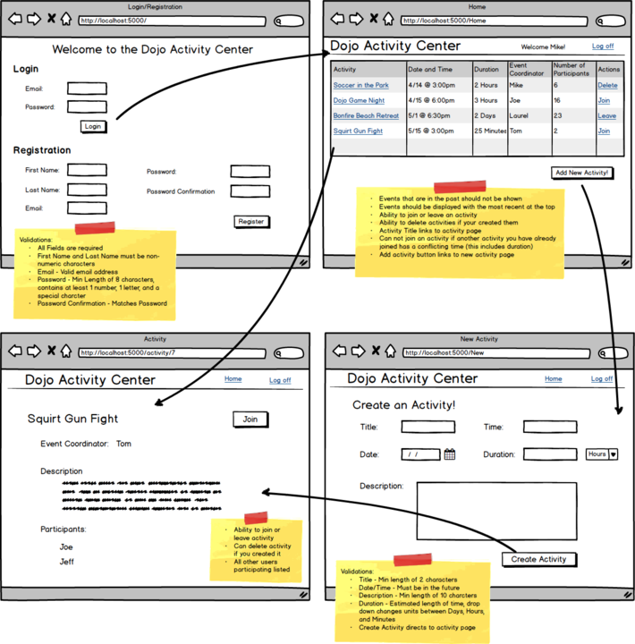
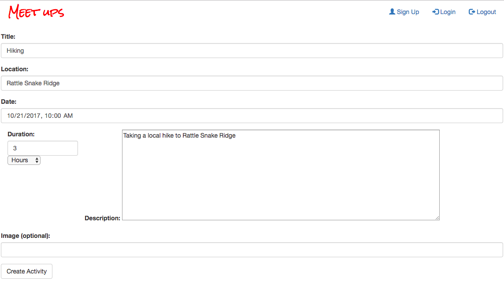
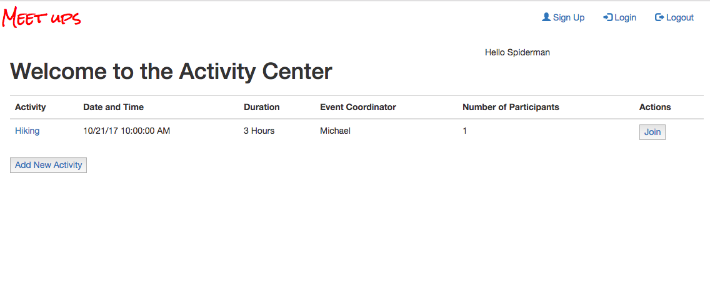

R .u .N
Are You In
Situation
This is my first personal full stack web development project. I love how meetup.com. works and wanted to replicate it on my own. I've used their website quite a bit to get out of my comfort zone. Wanted to build my own version of it as a project.
Task
Build out some basic wireframing of what I wanted to accomplish from this project. I wanted each user to have their own account. As well as the option to create an activity. If the user saw an activity that they wanted to join, they'd be able to see who else was going to the even and being able to join.
Action
I built the front-end based on what I thought would be a good user experience. When the user creates an account or signs in, it would first take them to the events dashboard to see which events they would like to join. From there, the user would be able to navigate around and click on events to see descriptions and who else is going to these events. I thought this was a nice flow of actions and what you'd expect when you sign into an account.
The back-end handled all the logic for the user and events. I created the user sign up functionality with validations based on the wireframe. I also successfully implement time collision between events so that people wouldn't be double booking themselves.
Results
The total development of the project took two weeks of development time. I was able to create a replica of meetup.com based on the wireframe drawn up. I was able to gain valuable experience building full stack web applications.
Technologies used
C# .NET | Bootstrap | Razor | ASP.NET-Core | Git | AWS
view Work
Website: Unfortunately, this website is not being hosted at the time. Please check the github source link.
Source Code: View Source Code
Screenshots
Wireframe
Create an event
User dashboard
